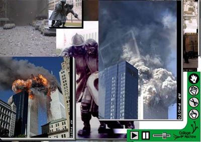

The Conceptual Space of Collage, from CollageMachine to Interface
Ecology and Back

Andruid Kerne
Detournement [is] the reuse of preexisting artistic elements in a new ensemble ... The two fundamental laws of detournement are the loss of importance of each detourned autonomous element -- which may go so far as to lose its original sense completely -- and at the same time the organization of another meaningful ensemble ... Detournement has a peculiar power which obviously stems from the double meaning, from the enrichment of most of the terms by the coexistence within them of their old senses and their new, immediate sense...
All forms of expression are ... reduced to self-parody... We find ourselves confronted with both the urgent necessity and near impossibility of bringing together and carrying out a totally innovative collective action...
 Tools for browsing are typically built in terms of documents -- Web pages. You start at one page, choose a hyperlink, and move to the next. Connections between documents that you see are fleeting associations in your mind. Hyperlinks are as ephemeral as the quick click of traversal. The document as a unit, representing the agency of the author, reigns supreme in this user experience.
Tools for browsing are typically built in terms of documents -- Web pages. You start at one page, choose a hyperlink, and move to the next. Connections between documents that you see are fleeting associations in your mind. Hyperlinks are as ephemeral as the quick click of traversal. The document as a unit, representing the agency of the author, reigns supreme in this user experience.
Similarly, disciplines function as nation-states of knowledge. Scientific and expository methods are reified through institutional status quos. Clear and present contribution to the production of order is standard. Normal interests are powered by the carrot of promotion. Borders are policed transparently through the incidental absence of support. Metaphor is only legitimate in poems.
The emerging metadiscipline of interface ecology provides an alternative to these compartmentalized towers of Babel. Interface ecology forms an intellectual basis, which territorializes processes of combination among systems of representation. That is, conceptual collage is elevated to the same level of significance as its particular constituent disciplines. To restate Duchamp, a discipline is a urinal.
As a metadiscipline, interface ecology brings the perspectives of diverse disciplines to bear on the form and function of interfaces. It explores and develops the complex web of interrelationships between people, activities, codes, components, and systems. Interfaces are the multidimensional border zones through which these relationships are constituted. The dynamic interactions of media, cultures, and disciplines flow through them. Interface ecology adapts and invokes functional principles of ecosystem dynamics for the information age.
To practitioners of interdisciplinary, intercultural, and intermedia work, its importance is obvious. Yet show me the institution that really supports efforts beyond department boundaries. I once made a presentation about interface ecology at a lab that is famous for its groundbreaking research in human computer interaction. This is a place that talks plenty about interdisciplinary work. The metadisciplinary framework was rejected because I had put forth a theory, without supplying a rigorous proof. People found it disturbing. "Theory" in that locale means the scientific method. "Interdisciplinary work" takes the form of a caste system. Research artists, anthropologists, and cultural theorists (for example) are not assigned the same rank as research scientists. This experience is normal, rather than exceptional.
 Yet the most fundamental research is that which is most freely conceptualized, instead of being dominated by a single system of representation. When addressed openly, through its multidimensional feedback pathways, the interface as border zone functions as a basis for the exchange and recombination of heterogeneous messages and their building blocks. New hybrids emerge through these interactions. The metadisciplinary space of interface ecology fosters such development.
Yet the most fundamental research is that which is most freely conceptualized, instead of being dominated by a single system of representation. When addressed openly, through its multidimensional feedback pathways, the interface as border zone functions as a basis for the exchange and recombination of heterogeneous messages and their building blocks. New hybrids emerge through these interactions. The metadisciplinary space of interface ecology fosters such development.
Collage is a critical paradigm of the information age because it opens the range of possibilities through which we interpret information artifacts. Cut and paste enables semiotic construction that simultaneously leverages and detourns the means of production embodied by particular media elements. The recombination of genetic codes of meaning creates hybrid forms. Through these cross-currents, culture, and even knowledge, evolve.
Ironically, the subversive method of detournement is also an engine of innovation. Innovation fuels capitalism's ongoing expansion. In this way, the irony takes form through the inevitable appropriation of detourned expression as the economic production of signs. The intentions of the creators of such signs become immaterial, while their function as commodities materializes. Thus the results of the most authentic creative processes are, as Debord observed, reduced to "self-parody".
Browsing is an open-ended activity, which involves fulfillment of vague desires, as well as satisfaction of definite goals. As such, open-ended browsing reflects life. Inasmuch as interactive artifacts are integrated with everyday life, they must be conceived in terms of the full range of activities which life encompasses. Only when they are so diverse, can they represent the cultures in which they are contextualized. I am co-developing the interactive artifact, CollageMachine [Kerne: 1996-2001], which addresses browsing creatively, with the metadisciplinary framework of interface ecology.

 Most interactive artifacts represent and support more or less closed form processes. That is, they are extremely finite state machines, that allow a predictable, limited set of actions and results. An extreme example is the customer order processing system in the prominent New York photographic house that I took slides to today for duplication. This system, which indexes customers by phone number, does not allow these numbers to be changed. This lack of foresight on the part of the developers renders the provision of basic services to a nomad such as myself as an aberration.
Most interactive artifacts represent and support more or less closed form processes. That is, they are extremely finite state machines, that allow a predictable, limited set of actions and results. An extreme example is the customer order processing system in the prominent New York photographic house that I took slides to today for duplication. This system, which indexes customers by phone number, does not allow these numbers to be changed. This lack of foresight on the part of the developers renders the provision of basic services to a nomad such as myself as an aberration.
Even editors, programming languages, and development environments are limited: while they enable authoring of works of any complexity in their target medium, they leave the burden of forming the layered building blocks of the work on the user. That is, they make the formation of sentences, paragraphs, chapters, and treatises possible, without doing much, if anything, to suggest steps one might take in the creative process. The underlying assumption is that creative impetus is the sole responsibility of the user. Similarly, while typical browsers let the user navigate any authored hypermedia pathway, all insight regarding the choice of path comes from the user. The assumption here is that the user "knows where s/he wants to go today". Typical agents, like shopping bots, do work on behalf of the user, based on a precise specification of a goal. These kinds of artifacts do not support the user in wandering or playing. They don't help you transform a vague, or even latent sense of interest into a stimulating multimedia experience.
 In contrast,
CollageMachine
supports an open-ended process of Web browsing, in which the user starts only with a sense of direction. Clear advance goals are not required. On-going feedback with actual media elements enables the trajectory to evolve. Strangely, interjecting a reflective agent can increase, instead of taking away from, the agency of the user in the process of browsing. The agent serves to mediate authorial power with respect to the user experience. The role of the user in browsing is recast from passive consumer to creative participant amidst the gamut of media producers.In contrast, CollageMachine supports an open-ended process of Web browsing, in which the user starts only with a sense of direction. Clear advance goals are not required. On-going feedback with actual media elements enables the trajectory to evolve. Strangely, interjecting a reflective agent can increase, instead of taking away from, the agency of the user in the process of browsing. The agent serves to mediate authorial power with respect to the user experience. The role of the user in browsing is recast from passive consumer to creative participant amidst the gamut of media producers.
In contrast,
CollageMachine
supports an open-ended process of Web browsing, in which the user starts only with a sense of direction. Clear advance goals are not required. On-going feedback with actual media elements enables the trajectory to evolve. Strangely, interjecting a reflective agent can increase, instead of taking away from, the agency of the user in the process of browsing. The agent serves to mediate authorial power with respect to the user experience. The role of the user in browsing is recast from passive consumer to creative participant amidst the gamut of media producers.In contrast, CollageMachine supports an open-ended process of Web browsing, in which the user starts only with a sense of direction. Clear advance goals are not required. On-going feedback with actual media elements enables the trajectory to evolve. Strangely, interjecting a reflective agent can increase, instead of taking away from, the agency of the user in the process of browsing. The agent serves to mediate authorial power with respect to the user experience. The role of the user in browsing is recast from passive consumer to creative participant amidst the gamut of media producers.
CollageMachine is constructed through a confluence of conceptual spaces - as art, music, science, and design. On the one hand, the artifact builds on the practices of the avant-garde artists - such as Duchamp, Ernst and Cage -- who pioneered the methods of collage and indeterminacy. The findings of creative cognition research indicate that the methods of semiotic collage artists promote emergence and creativity both for the artist and for the audience [Kerne: 2001]. CollageMachine takes on an essential part of the creative process usually assigned to the collage artist, in order to give the audience/user the potential for emergent creative experience.
On the other hand, my approach is rooted in music composition and improvisation. To compose in the medium of the web, I make temporality interactive. I create a visual display which evolves dynamically over time, instead of a single static frame, or a preset filmic sequence. I invoke cross-rhythm, the systematic interplay of contrasting rhythmic motions within a single metric scheme [Ladzekpo 1995]. I bring the operation of a musical form of collage to the context of browsing the World Wide Web.
Figure 1. Modules interconnect, with user interaction, to make CollageMachine adaptive.
At the same time, I build CollageMachine as a tool, as well as a creative work, through the craft of computer science. Internally, CollageMachine consists of three essential functional modules: the agent, the visual designer, and the direct manipulation interface. The role of the agent is to model the user's interests and act on behalf of them. It has the semiotic responsibility to interpret the meanings of potential and actual collage elements, understand what is related, and choose content accordingly. The visual designer decides how the collage will look; it makes dynamic choices about colors, sizes, and placement in order to synthesize a collage visualization of the media elements and the agent's model. The direct manipulation interface enables the user to express ongoing interest or disinterest in particular media elements, to rearrange the visual appearance of the collage, to browse, and to otherwise control the collage session. While these functional aspects are reasonably distinct, they are also interconnected by important feedback pathways. The agent informs the designer. The designer creates the visualization. The interface directly manipulates the visualization and feeds back to the agent. This makes CollageMachine adaptive.
 Usability and human computer interaction design are also essential. The collage is generated in response to the user. This includes the choice of content, as well as its look and feel and arrangement in her/his browsing experience. The user needs a decent understanding of what CollageMachine does, in order to be able to control it. Through its design, I have tried to make CollageMachine's workings illustrate themselves. Don Norman calls the relationship between interactive controls and their results "a mapping"
[Norman: 22]. At the start of a session, the user directs CollageMachine towards initial web content. As the session continues, s/he can effect what material the collage is composed from, and how this material is visually arranged. These two functions are mapped together through drag and drop interaction. They are united in a fairly intuitive direct manipulation interface: changing the visual arrangement results in changes in the importance of related media. Usability tests indicate significant success in users' ability to achieve desired results through this mechanism. Usability data also show that, situated in the context of using the artifact, users are able to articulate the need for visual and interaction design to work in concert with algorithmic sophistication.
Usability and human computer interaction design are also essential. The collage is generated in response to the user. This includes the choice of content, as well as its look and feel and arrangement in her/his browsing experience. The user needs a decent understanding of what CollageMachine does, in order to be able to control it. Through its design, I have tried to make CollageMachine's workings illustrate themselves. Don Norman calls the relationship between interactive controls and their results "a mapping"
[Norman: 22]. At the start of a session, the user directs CollageMachine towards initial web content. As the session continues, s/he can effect what material the collage is composed from, and how this material is visually arranged. These two functions are mapped together through drag and drop interaction. They are united in a fairly intuitive direct manipulation interface: changing the visual arrangement results in changes in the importance of related media. Usability tests indicate significant success in users' ability to achieve desired results through this mechanism. Usability data also show that, situated in the context of using the artifact, users are able to articulate the need for visual and interaction design to work in concert with algorithmic sophistication.
As with any artifact, the processes through which an interactive artifact is conceptualized, designed, and developed determines its resulting form and function. Usually, this process proceeds within the confines of some particular academic disciplinary structure, like computer science, or of some particular corporate departmental structure in which "marketing" defines the economic and conceptual space that "technology" and "creative" operate in, or in some successful venture capital structure, in which a new corporation's goals are defined in terms of market trends.
As the exploration which CollageMachine supports is open-ended, so the program itself was developed through an open process. I began not with a tight specification, but with a certain aesthetic sensibility, and with the potential for a certain level of scientific and technological capability. Within this space, my charter was to explore. I did not have to create something useful right away. I was able to play with ideas that I found interesting.
 I conceptualize and refine CollageMachine through the methods of the fledgling interface ecology metadiscipline. Interface ecology brings the perspectives of diverse disciplines to bear on what interfaces are, how they work, and how they can work. It does this in a non-hierarchical way, according to the principle of equal value. No discipline dominates; none are considered subordinate. Rather, they are interdependent components, connected by flows of interaction. This "meshwork" ecosystem form supports open-ended inquiry. Thus, it enables the development of interactive artifacts, like CollageMachine, that support open-ended processes. The ecological approach also opens inquiry into the levels of function and context which influence the effects of interfaces. The exploration and operation of interface ecology unearths fundamental issues about the structure of meanings, knowledge, disciplines, media, cultures, and interfaces themselves. It engages history, politics, ethnography, economics, and semiotics, as well as computer science, cognitive science, composition, design and art.
I conceptualize and refine CollageMachine through the methods of the fledgling interface ecology metadiscipline. Interface ecology brings the perspectives of diverse disciplines to bear on what interfaces are, how they work, and how they can work. It does this in a non-hierarchical way, according to the principle of equal value. No discipline dominates; none are considered subordinate. Rather, they are interdependent components, connected by flows of interaction. This "meshwork" ecosystem form supports open-ended inquiry. Thus, it enables the development of interactive artifacts, like CollageMachine, that support open-ended processes. The ecological approach also opens inquiry into the levels of function and context which influence the effects of interfaces. The exploration and operation of interface ecology unearths fundamental issues about the structure of meanings, knowledge, disciplines, media, cultures, and interfaces themselves. It engages history, politics, ethnography, economics, and semiotics, as well as computer science, cognitive science, composition, design and art.
The framework that I develop in this work encompasses both the analysis of interfaces in action, and the actual building of interfaces. It establishes fundamental connections between these processes of analysis and development. It dwells in the interstices between systems of representation. Interface ecology substantiates and territorializes these borders as zones of interconnection, so as to avert the marginalization they otherwise afford.
I am not only proposing new disciplinary formations; with interface ecology, I am also creating a new space to support the process of disciplinary combination. Interface ecology considers media, cultures, and disciplines in terms of their common semiotic building blocks, that is, as instances of systems of representation. Interfaces are the border zones, connecting and separating, positioned between these semiotic systems. Interface ecosystems are characterized by dynamic exchange between particular components. What is exchanged particularly are semiotic elements, or signs. While human computer interfaces are one potent species of interfaces, which create openings and barriers on many levels, there are many other phenomena based on semiotic intersection and interaction, such as diaspora, intercultural exchanges, mixed media performances, and site-specific installations. The interconnecting pathways that characterize these diverse phenomena bring their reactants into mutual contact, enabling the formation of hybrids.
Most broadly, interface ecology and CollageMachine are independent initiatives that have coincidentally overlapped. The overlapping formed a relationship. At first glance, this relationship between interface ecology and CollageMachine is that of theory and practice. Interface ecology is a way of working; CollageMachine is a work. Practice demonstrates theory. However, part of what interface ecology establishes is that any separation of theory and practice is artificial. C'mon baby, let the interconnections roll. Not only does all theorizing take place in context, but an interface, by nature, connects.
Figure 2. Collage turns the theory-to-practice conceptual flow
from interface ecology to CollageMachine into a feedback loop.
Overlapping creates mutual influence in the form of feedback loops developed between the application and the theoretical framework (See Figure 2). Collage recombination is at the heart of both. CollageMachine is an agent of web recombination; and the recombination of disciplines, media, and cultures, is essential to interface ecology. Both are about blending and mixing. Both are about creating hybrids. Through the approach of interface ecology, the form of CollageMachine developed. At the same time, the process of developing CollageMachine caused me to investigate the history and nature of collage. Because I was working on both at the same time, I could not help but consider collage in the context of interface ecology. Thus the impetus to create interactive collages of web media elements, and the impetus to create conceptual collages from systems of representation, come from the same place. A collage of disciplines forms the operative conceptual space. Collage as detournement manufactures interfaces that transform meaning combinatorially. Thus, the particulars of the CollageMachine project spurred fundamental initiative in the definition of interface ecology's foundation. They have mutually inspired each other, and continue to do so. Interface ecology is more than the theoretical groundwork from which CollageMachine sprang. Creating a loop, the utilization of collage principles in CollageMachine -- which developed through the practice of interface ecology -- also spurred interface ecology's refinement. CollageMachine is a model of interface ecology both as an instance of it, and also as a conceptual source for it. This tandem demonstrates how theory and practice connect through interfaces. The ecosystem and collage forms are isomorphic. These non-hierarchical assemblages of semiotic and cyborg components foster complex webs of contextual interrelationships.
Debord, Guy.
Situationist
International Anthology. Bureau of Public
Secrets: Berkeley, California, 1981.
Kerne, Andruid. Interface Ecology Web.
http://mrl.nyu.edu/ecology, 1996-2001.
Kerne, Andruid.
"CollageMachine:
Interest-Driven Browsing Through Streaming Collage",
in Proceedings of Cast01: Living in Mixed Realities. Bonn. Sept 2001.
Ladzekpo, C.K. The Myth of Cross Rhythm.
http://www.cnmat.berkeley.edu/~ladzekpo/Myth.html, 1995.
Norman, Donald.
The
Psychology of Everyday Things. New York: Basic
Books, 1988.
© Copyright 2001 by Andruid Kerne. |